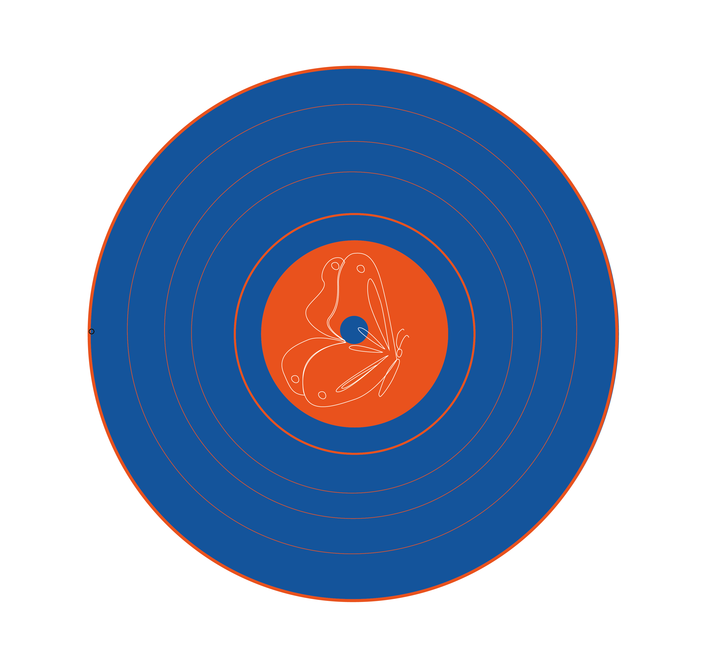
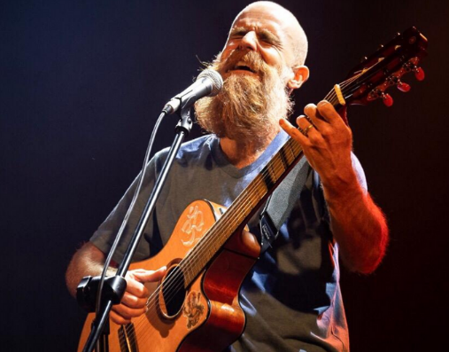

ÚLTIMO DISCO
Transformación
2024 - Albúm
Un viaje sonoro que explora la transformación personal
y colectiva través de canciones que combinan poesía,
melodías y raíces latinoamericanas
Spotify
Apple Music
Youtube
Música que nace desde lo profundo, conecta y transforma.
Canciones que viajan entre lo personal y lo universal.


ÚLTIMO DISCO
2024 - Albúm
Un viaje sonoro que explora la transformación personal
y colectiva través de canciones que combinan poesía,
melodías y raíces latinoamericanas
Spotify
Apple Music
Youtube
Desde 2017 desarrollo mi carrera como solista, explorando
géneros como el rock, reggae, pop y ska. Fui parte de
bandas que dejaron una huella importante en la escena
uruguaya y regional.
Composiciones propias que reflejan vivencias, emociones y búsquedas personales.
Cada canción nace de un proceso creativo, auténtico y profundo
Música uruguaya y latinoamericana
con parra universal.